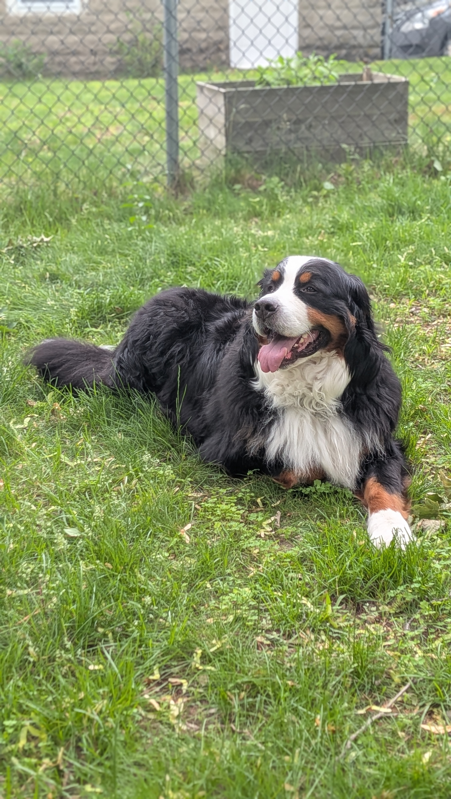

Software engineer · Maker · Medford, MA
I build tools
I build tools
and tinker with things.
Software by trade, hardware by curiosity. I like making the kind of small, sturdy tools that quietly make a day better — in code and on the workbench.

The co-pilotchief morale officer
Off the clock
A little about me
When I'm not at a keyboard or a soldering iron, I'm usually out with my Bernese mountain dog — the unofficial inspiration for half the colors on this site (and most of the dog hair on my projects).
I care about craft: code that's kind to the next person who reads it, and objects that feel good to use. This site is a place to keep the things I've made and the notes that go with them.